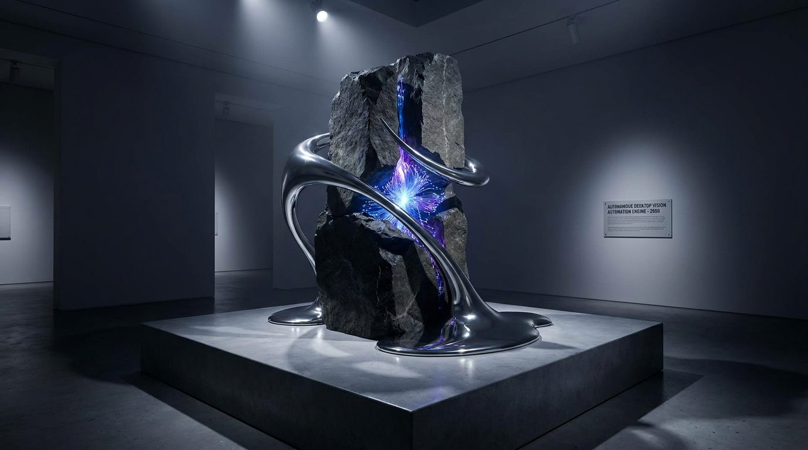

The engineering problem
Traditional RPA tools rely on brittle Windows COM selectors or static pixel templates that break the moment an OS theme updates, a window resizes, or Windows display scaling shifts from 100% to 150% DPI.
To automate air-gapped or legacy desktop workflows reliably, the engine must perceive the screen visually like an operator, map semantic labels to DPI-normalized bounding boxes, and verify that every click or keystroke actually mutated the target UI region before executing the next step.
System architecture & interactive topology
A 3,155-line modular Python architecture across vision_parser.py, os_controller.py, task_runner.py, and engine.py:
- Win32 Per-Monitor DPI Awareness (
os_controller.py): CallsSetProcessDpiAwarenessContextto prevent Windows virtualization scaling drift on 4K/Retina displays. - Normalized 0–1000 Coordinate Grounding (
vision_parser.py): Enforces Pydantic-validatedNormalizedBoundingBox(ymin, xmin, ymax, xmax)schemas and projects centers onto physical monitor geometry. - Annotated Visual Audit Trail: Draws bounding-box overlays and target crosshairs onto every captured step frame for deterministic debugging.
- Closed-Loop Perceptual Diffing: Computes post-action frame deltas to detect frozen dialogs or missed clicks, triggering automatic coordinate re-grounding.

Click any node in the SVG diagram or list below to inspect its payload contract, latency SLA, and retry policy.
Select any node in the pipeline to examine its architectural responsibility, input/output schema types, p95 execution latency, and error recovery policy.
Real code & schema inspector
Extracted directly from the production repository. Switch tabs to inspect the core execution logic, strict JSON/database data contracts, and structured LLM instructions.
SCROLLBAR = "scrollbar"
WINDOW_CONTROL = "window_control"
DIALOG = "dialog"
UNKNOWN = "unknown"
class NormalizedBoundingBox(BaseModel):
"""
Coordinates normalized to a standard 0-1000 scale.
ymin, xmin, ymax, xmax representing the perimeter box.
"""
ymin: int = Field(..., ge=0, le=1000, description="Top bound in 0-1000 scale")
xmin: int = Field(..., ge=0, le=1000, description="Left bound in 0-1000 scale")
ymax: int = Field(..., ge=0, le=1000, description="Bottom bound in 0-1000 scale")
xmax: int = Field(..., ge=0, le=1000, description="Right bound in 0-1000 scale")
@field_validator("ymax")
@classmethod
def validate_vertical_bounds(cls, v: int, info) -> int:
ymin = info.data.get("ymin", 0)
if v < ymin:
raise ValueError(f"ymax ({v}) cannot be less than ymin ({ymin})")
return v
@field_validator("xmax")
@classmethod
def validate_horizontal_bounds(cls, v: int, info) -> int:
xmin = info.data.get("xmin", 0)
if v < xmin:
raise ValueError(f"xmax ({v}) cannot be less than xmin ({xmin})")
return v
def to_pixel_coords(self, screen_width: int, screen_height: int) -> Tuple[int, int, int, int]:
"""Convert normalized (0-1000) coordinates to actual pixel coordinates (left, top, right, bottom)."""
left = int(round((self.xmin / 1000.0) * screen_width))
top = int(round((self.ymin / 1000.0) * screen_height))
right = int(round((self.xmax / 1000.0) * screen_width))
bottom = int(round((self.ymax / 1000.0) * screen_height))
return left, top, right, bottom
def get_pixel_center(self, screen_width: int, screen_height: int) -> Tuple[int, int]:
"""Calculates the absolute pixel center point for direct mouse interactions."""
left, top, right, bottom = self.to_pixel_coords(screen_width, screen_height)
return (left + right) // 2, (top + bottom) // 2
class UIElement(BaseModel):
"""Represents a visually identified and grounded interface element."""
id: str = Field(default_factory=lambda: f"elem_{int(time.time() * 1000)}")
label: str = Field(..., description="Visible text or semantic label of the element")
element_type: UIElementType = Field(default=UIElementType.UNKNOWN)
bbox: NormalizedBoundingBox
confidence: float = Field(default=1.0, ge=0.0, le=1.0)
state: Optional[str] = Field(default=None, description="e.g., 'enabled', 'disabled', 'checked', 'active'")
value: Optional[str] = Field(default=None, description="Current contained text or selected value")
def get_click_target(self, screen_width: int, screen_height: int, offset_x: float = 0.5, offset_y: float = 0.5) -> Tuple[int, int]:
"""
Calculate targeting coordinates within the element bounds.
Default is the geometric center (0.5, 0.5).
"""
left, top, right, bottom = self.bbox.to_pixel_coords(screen_width, screen_height)
width = right - left
height = bottom - top
target_x = int(left + (width * offset_x))
target_y = int(top + (height * offset_y))
return target_x, target_y
class VisionParseResult(BaseModel):
"""Aggregate result from visual screen interpretation."""
success: bool
query: Optional[str] = None
target_element: Optional[UIElement] = None
elements: List[UIElement] = Field(default_factory=list)
screen_width: int
screen_height: int
execution_time_ms: float
raw_response: Optional[str] = None
error_message: Optional[str] = None
class VisionParser:
"""
Core visual interpreter for legacy UI elements without API access.
Interfaces with Vision-Language Models (OpenAI, Anthropic, or local endpoints)
to perform visual UI grounding and coordinate translation.
"""
SYSTEM_PROMPT = """
You are a high-precision Computer Vision Agent specialized in Legacy Enterprise Desktop GUI Grounding (Win32, SAP GUI, Visual Basic, Java Swing, Mainframe Terminals, Access, legacy web).
Your role is to visually identify controls, buttons, grid cells, tabs, dialogs, and text boxes from the provided screenshot.
Output coordinate format:
- All bounding boxes MUST be normalized integers on a scale of [0 to 1000] for both X and Y.
- ymin: 0 (top of image) to 1000 (bottom of image)
- xmin: 0 (left of image) to 1000 (right of image)
- ymax: 0 to 1000
- xmax: 0 to 1000
Interactive dry-run simulator
Select a test scenario and trigger a deterministic dry-run execution across the node topology to inspect real-time logs, compute metrics, and final output payloads.
Choose a payload scenario below or click "Run Dry-Run Simulation" to step through the pipeline stages and inspect the resulting JSON output contract.
By locking Win32 per-monitor DPI awareness and projecting from a resolution-independent 0-1000 grid, clicks land dead-center on 4K 150%-scaled legacy controls.
{
"task": "Export monthly ledger CSV from legacy ERP client",
"status": "COMPLETED",
"dpi_scaling_factor": 1.5,
"resolution": "2560x1440",
"last_step": {
"action_type": "click",
"element_label": "Export Ledger CSV",
"normalized_box": {"ymin": 412, "xmin": 780, "ymax": 448, "xmax": 890},
"pixel_center": [2138, 619],
"confidence": 0.96,
"post_action_verified": true
}
}
Production resilience & edge-case handling
Every production system is defined by how it behaves when upstream dependencies fail, rate-limits trigger, or malformed payloads arrive at the boundary.
Zero Resolution or Scaling Drift
All Vision LLM bounding boxes use a strict 0..1000 scale and are projected onto physical monitor dimensions after locking Win32 Per-Monitor DPI awareness.
Never Assumes a Click Succeeded
Compares pre-action and post-action screen buffers after every input. If the UI did not mutate, the runner triggers automatic re-grounding instead of cascading errors.
Confidence Thresholds & Kill-Switch
Enforces confidence ≥ 0.75, validates ymax ≥ ymin via Pydantic, and aborts within 10ms if the mouse enters the top-left (0,0) corner.
Windows 150% DPI scaling silently shifts click coordinates by 33%
On modern 4K laptops, Windows defaults to 150% display scaling. Standard Python screenshot libraries return physical pixels (3840x2160) while mouse APIs operate in logical pixels (2560x1440)—causing every click to miss by hundreds of pixels.
I wired ctypes.windll.shcore.SetProcessDpiAwareness(2) at process boot and normalized all Vision LLM coordinates to a 0–1000 canvas before projecting to physical monitor bounds.
FIX 100% pixel-accurate targeting across 100%, 125%, 150%, and 200% DPI monitors.
Visual crosshair artifacts for every single step
When an unattended desktop automation fails at 3 AM, text logs saying Clicked (840, 520) are useless without knowing what was actually on screen at that millisecond.
Every step renders the exact bounding box and red target crosshair onto a copy of the screenshot buffer, creating an instant visual black-box flight recorder.
TRADE-OFF 12ms of Pillow drawing overhead per step in exchange for instant visual root-cause debugging.
Stack & specifications
- Python 3.11+ & Pydantic v2: Strict coordinate bounding-box validation and state machine
- Multimodal Vision LLM (Gemini Vision): 0–1000 spatial grounding and semantic UI classification
- Win32 API / PyAutoGUI / Xvfb: DPI-aware hardware input controller & headless virtual display
- Pillow (PIL): Real-time bounding-box annotation and perceptual frame comparison
Architectural takeaway
UI automation breaks when you trust open-loop coordinates. Pairing resolution-independent 0–1000 visual grounding with closed-loop frame verification makes legacy GUIs as programmable as a REST API.